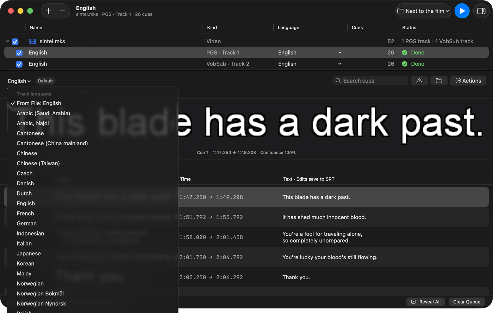

Blu-ray subtitles
Convert PGS or SUP subtitles to SRT
Read PGS tracks directly from .mkv and .mks containers, or open a standalone .sup file. Select one track or several without extracting them first.
Free, native macOS bitmap subtitle OCR
Open an MKV, MKS, SUP, or SUB/IDX file. Choose the bitmap subtitle tracks you want. macSubtitleOCR turns them into editable SRT text with Apple Vision, then shows every result beside the image it read.
Version 1.0.0 · macOS 15+ · Apple silicon and Intel · MIT licensed

What do you need to convert?
Blu-ray subtitles
Read PGS tracks directly from .mkv and .mks containers, or open a standalone .sup file. Select one track or several without extracting them first.
DVD subtitles
Open a paired .sub and .idx set, or recognize VobSub tracks inside .mkv and .mks files. The palette, timing, and language metadata stay together.
One local workflow
Bitmap subtitle input
Editable subtitle output
How to make an SRT
Drag in a file or folder, press ⌘O, use Open With in Finder, or run the Recognize Subtitles service.
See each PGS or VobSub track with its language, name, flags, and cue count. Select only the tracks you need.
Start recognition and follow real cue progress. By default, SRT files are saved beside the source with language-aware names.
Compare every line with its source bitmap. Low-confidence cues are flagged; edits are written back to the SRT as you type.

Made for this exact job
Matroska parsing and PGS/VobSub decoding are built in. You do not have to extract tracks with another app before recognition.
Skip commentary, alternate languages, and duplicate tracks. Batch a folder when you do want a whole season.
The original bitmap, cue time, confidence, and editable text appear together, so errors are visible before you use the file.
The signed and notarized universal app supports drag and drop, Open With, Services, Shortcuts, notifications, and Dock progress.
Your video, subtitle images, recognized text, optional clean-up, and translation stay on your Mac.
The app and SubtitleEngine library are MIT licensed. Inspect the source, build it yourself, or use the signed release.
Download
Download the latest signed and notarized disk image, open it, and drag macSubtitleOCR to Applications. The release is a universal app for Apple silicon and Intel.
Requires macOS 15 Sequoia or newer. Apple Intelligence clean-up requires macOS 26 and a supported Apple silicon Mac, but conversion does not.
Questions before you convert
Open an .mkv, .mks, or .sup file, select the PGS track, and choose Make Subtitles. The app recognizes each bitmap and creates an editable SRT. See the complete PGS guide.
Yes. Keep the paired files in the same folder and open either one. VobSub tracks inside MKV and MKS files work too. See the complete VobSub guide.
For bitmap-to-text conversion, it can be. Subtitle Edit is a much broader editor; macSubtitleOCR concentrates on PGS and VobSub OCR, native Mac integration, and reviewing recognized cues.
No. The app reads Matroska containers, decodes the subtitle images, and recognizes them with Apple Vision by itself.
Not directly. For Blu-ray .m2ts, first remux to MKV with a tool such as MakeMKV. MP4 is usually the destination: mux the resulting SRT as a soft subtitle with Subler or another tool.
No OCR is perfect. Small type, italics, unusual fonts, and decorative dialogue can cause errors. macSubtitleOCR flags low-confidence cues and keeps the bitmap beside the editable result so you know what to check.
Beside the source by default: MyFilm.mkv can produce MyFilm.eng.srt. You can choose another folder or have the app ask before each run.
Recognition, optional Apple Intelligence clean-up, and translation run locally. The app can check GitHub once a day for a newer release; that check is optional and can be disabled.
Yes. The published disk image is universal and runs on Intel and Apple silicon Macs with macOS 15 or newer.
No account, uploads, package manager, or companion app.